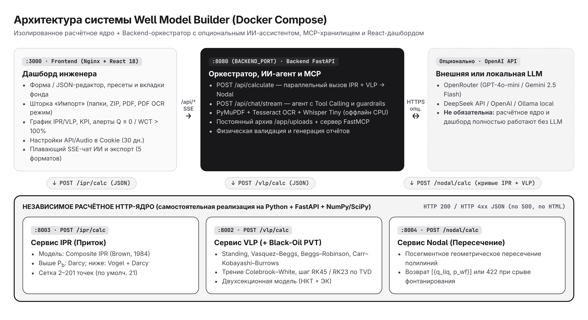
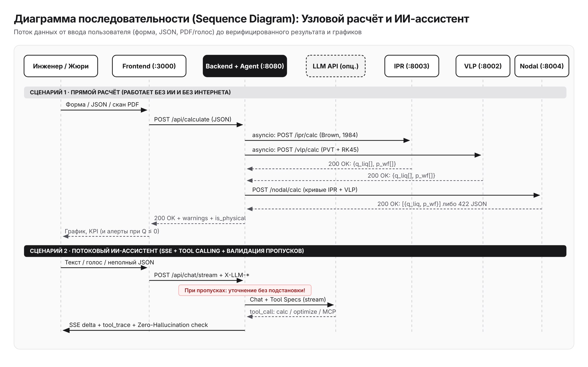

Well Model Builder
Микросервисная инженерная система узлового анализа «пласт — скважина» для расчёта кривых притока (IPR), многофазного подъёма (VLP + PVT) и определения рабочей точки (Nodal) с опциональным ИИ-ассистентом.
Состав команды и роли
Мусин Тимур (legionhaos)
- FastAPI-оркестратор
/api/calculateи единая физическая валидация. - Потоковый SSE ИИ-агент (16 tools), проверка пропусков и защита
guardrails. - Мультимодальный импорт (PDF Tesseract OCR, оффлайн Whisper Tiny), серверный архив MCP.
- Автотесты бэкенда, Playwright QA и бенчмарк по ТЗ.
Макар Иванов
- Инженерный дашборд React 18 + TypeScript + Recharts в дизайн-системе «Титан / Антрацит».
- Окно
SettingsModalс сохранением конфигурации в cookie (30 дн.). - Подсветка ошибок физики на полях формы, предупреждения KPI и графика при аномалиях.
- Верстка презентационных материалов и структуры UI.
Данила Никифоров & therealkefir
- Самостоятельная реализация микросервисов IPR (
:8003), VLP+PVT (:8002) и Nodal (:8004). - Интегратор
RK45/RK23по TVD, трение Colebrook–White и Black-Oil корреляции. - Контрактная верификация на эталоне
well_01и сборкаdocker-compose.yml.
Самостоятельность ядра (критерий #2): все расчётные HTTP-сервисы (IPR, VLP, Nodal) написаны командой с нуля на Python + NumPy/SciPy без использования готовых бинарников/заглушек организаторов.
ИИ-инструменты разработки, модели и задачи
| Инструмент | Используемые модели | Участники | Решаемые задачи и верификация человеком |
|---|---|---|---|
| Antigravity IDE & CLI | Gemini / Claude (Sonnet/Opus) | Тимур | Архитектура оркестратора, SSE-стриминг ИИ-агента, Whisper Tiny + PyMuPDF/Tesseract OCR, FastMCP, Playwright QA и adversarial-бенчмарки. |
| Claude Code | Claude Sonnet / Opus | Тимур, Данила | Проектирование Pydantic-схем 4xx-валидации, перебор методик PVT/VLP и генерация pytest-сьютов на граничные условия. |
| Cursor / VS Code AI | GPT-4o / Claude | Макар Иванов | Вёрстка React/TypeScript компонентов дашборда, унификация CSS-переменных («Титан / Антрацит»), адаптивность и портал настроек. |
Контроль качества кода
Каждый сгенерированный фрагмент проходил обязательное инженерное ревью, ручную сверку формул (Brown 1984, Standing, Colebrook–White) с эталоном well_01 и автоматический прогон тестов pytest.
Принцип открытости
Инструменты использовались для ускорения рутинной обвязки, UI и тестирования. Полная логика расчёта, контракты и диагностика проверены командой построчно.
Точный расчёт узловой точки и надёжный ИИ-помощник
Разрозненные данные и риск галлюцинаций LLM
- Промысловые исходные данные разбросаны по JSON, Excel, DOCX, сканам PDF и голосовым заметкам технологов.
- Обычные LLM подменяют гидродинамический расчёт приблизительной оценкой «на глаз» и не ловят нарушения физики (например
WCT > 100%илиdНКТ > dЭК). - При неполном вводе пользователь рискует получить ответ с молча подставленными числами вместо честного запроса уточнений.
Детерминированное ядро + проверяемый ИИ
- Полная автономность без ИИ: расчётное ядро, оркестратор, импорт файлов, оптимизация и отчёты работают даже при пустом
LLM_API_KEYи без интернета. - Проверка пропусков: при неполном JSON/тексте ассистент явно перечисляет недостающие поля и без согласия значения не подставляет.
- Zero Hallucination: любые числа в ответе ИИ берутся только из инструментов расчёта или ввода пользователя (контроль
redact_unsupported_numbers).
Схема микросервисов и диаграмма последовательности


Гидродинамические модели и верификация well_01
Математические модели и ошибки 4xx
- IPR (
POST /ipr/calc): Composite Brown (1984) — Дарси выше Pb, Вогель + Дарси ниже; сетка2–201точек (умолч.21), единицы строго в атм и м³/сут. - VLP + PVT (
POST /vlp/calc): Standing, Vasquez–Beggs, Beggs–Robinson, Carr–Kobayashi–Burrows;rp(м³/т) → (м³/м³); Colebrook–White +RK45/RK23по TVD; газz=1. - Nodal (
POST /nodal/calc): посегментное пересечение кривых, строго одна точка или422 JSONпри отсутствии фонтанирования. - Контракт ошибок: при любом битом JSON,
points ∉ [2..201]или пустом теле — строгоHTTP 4xx JSONсdetail/description(ноль500и HTML).
Потоковый SSE-консультант, 16 инструментов и защита данных
JSON, текст, голос и защита от домыслов
- Встроен в дашборд: компактный плавающий SSE-чат с живой трассировкой шагов (
tool_start/tool_end). - Неполные данные без подстановки: если пользователь прислал неполный JSON или текст (
p_res=220, wct=40%), агент проверяет схему и запрашивает уточнение, не подставляя дефолты формы без согласия. - Без ложных вызовов: приветствия и теоретические вопросы не запускают расчёты; смена модели/ключа работает через UI «Настройки» (Cookie 30 дн.) и
.env, приватных ключей в поставке нет (только.env.example).
Guardrails и архив на сервере
- Zero Hallucination:
redact_unsupported_numbersпроверяет числа в тексте по выходам инструментов расчёта. - Prompt-Injection & ПДн: пользовательский ввод и содержимое файлов изолируются в
<untrusted_data>; телефоны/email/токены маскируются. - MCP-сервер файлов: инструменты
list_server_files/read_server_file/search_server_filesдают ИИ доступ к загруженным ранее PDF-паспортам иsamples/. - Неблокирующая физика: при
q_liq <= 0иWCT > 100%подсвечиваются поля, выводится баннер на графике/KPI и меткаНЕФИЗИЧНЫЙв экспорте.
Сравнение и выбор языковой модели
| Модель / Провайдер | Tool Calling (JSON) | Vision OCR (PDF-сканы) | Латентность (TTFT) | Стоимость (1 диалог ~1.75K ток.) | Вывод и роль в системе |
|---|---|---|---|---|---|
| openai/gpt-4o-mini OpenRouter / OpenAI API |
Высокая точность аргументов | Да (встроенный Vision) | ~0.6–1.2 сек | ~0.00042 $ (~0.04 ₽) | Выбрана по умолчанию: лучший баланс точности вызова 16 tools, Vision и цены. |
| google/gemini-2.5-flash OpenRouter |
Высокая | Да (нативное фото и аудио) | ~0.5–1.0 сек | ~0.00042 $ (~0.04 ₽) | Рекомендуемый мультимодальный пресет в UI-настройках для тяжёлых сканов и аудио. |
| deepseek-chat DeepSeek API |
Хорошая (RU + код) | Нет (нужен Tesseract) | ~1.0–1.8 сек | ~0.00076 $ (~0.07 ₽) | Доступен пресетом для текстовых инженерных рассуждений при наличии локального OCR. |
| qwen2.5:14b (локально) Ollama (closed contour) |
Средне-высокая | Только через VLM / Tesseract | Зависит от GPU | 0 ₽ (локально) | Контур без интернета; в связке с предзагруженными Whisper Tiny + Tesseract OCR. |
Гибкость переключения: смена Base URL, модели, API-ключа и режимов Speech/OCR выполняется за 1 клик в интерфейсе «Настройки» (cookie 30 дней) или через .env — без перезапуска или правки кода.
Ключевые метрики точности, скорости и стоимости
- qliq:
127.78против эталона127.53 м³/сут(допуск 10%). - pwf:
50.27против эталона50.94 атм(допуск 10%). - Точки кривых IPR/VLP проходят независимую сверку ≤ 5%.
- IPR
/ipr/calc: p50 =1.06 мс(max1.70 мс). - VLP
/vlp/calc: p50 =52.84 мс(интегрирование RK45). - Nodal
/nodal/calc: p50 =1.50 мс. - Сквозной
/api/calculate: p50 =60.32 мс, p95 =66.43 мс.
- Средний диалог ИИ: ~1 400 in + ~350 out токенов (~0.00042 $), отслеживается в
usage. - Ollama / Без ИИ / Ядро:
0 ₽. - Whisper Tiny (CPU int8) и Tesseract OCR:
0 ₽, работают без внешнего API.
Полный набор прикладных инструментов инженера
Сценарии «Что если»
Расчёт дельт qliq и pwf при изменении Pwh, WCT и Pres.
Фото и сканы PDF
Tesseract (rus+eng) + Vision LLM с кнопкой применения.
Whisper Tiny (CPU)
Оффлайн-транскрибация .wav/.ogg/.mp3 + LLM fallback.
7 форматов + папки
Drag&Drop папок, ZIP, PDF, XLSX, DOCX, CSV, JSON, TXT.
Экспорт (5 форматов)
HTML+SVG, Excel (XLSX), CSV, MD, JSON с пометкой нефизичности.
Сканер и FastMCP
Поиск в samples/ и архиве /app/uploads по MCP.
Guardrails & ПДн
Фильтры инъекций, проверка чисел и защита от WCT > 100%.
База методик
Поиск по формулам Brown, Standing и Colebrook с источниками.
Подбор НКТ ГОСТ
Перебор 48–114 мм, оптимальное Pwh и WCTcrit.
Сверка с замером
Невязка факта и модели, скин-фактор и калибровка PI.
Протокол аудио/совещ.
Выделение решений, поручений и сроков из текста.
Пакетный расчёт + 5 AI
Сводка по кусту + Flow Assurance, VFM, Монте-Карло, ГТМ, Экономика.
Тестирование граничных, битых и неполных данных
Контракты и ядро (37 тестов)
Юнит-тесты IPR/VLP/Nodal, эталон well_01 и контракты E2E пройдены на 100%.
Бенчмарк ТЗ (tests/test_benchmarks_tz.py)
Границы points [2..201], битый/пустой JSON → 4xx JSON, неполный ввод в чате без подстановки формы, отсутствие пересечения.
Бэкенд + Playwright QA (27 + UI E2E)
Проверены SSE-стриминг, Whisper Tiny, 16 тестовых файлов (test_import_files/), cookie 30 дн., алерты при WCT=120% и шторка импорта.
Живой стенд для прогона жюри
Готовы принять любой JSON или текст жюри (включая неполный/неверный ввод), показать расчёт без ИИ и живой SSE-чат.
Одна команда бенчмарка: python3 scripts/run_benchmarks.py замеряет латентность (10 прогонов), точность well_01, формат ошибок 4xx, обработку неполных данных и 16 файлов импорта.
Физические допущения, ограничения и Roadmap
Текущие ограничения системы
- Однородная VLP без скольжения: по базовой модели ТЗ фазовое проскальзывание не учитывается, газ принимается идеальным (
z = 1), вода — несжимаемой. - Точность оффлайн-распознавания: CPU-модель
Whisper Tinyуступает крупным облачным моделям на сильном шуме;Tesseract OCRтребует сканы ≥ 150 DPI (переключается в UI на Vision/Audio LLM). - Лимит загрузки: размер одного загружаемого файла/архива ограничен
25 МБ.
План развития решения
- Расширенная гидродинамика: подключение многофазных корреляций со скольжением (Beggs–Brill, Hagedorn–Brown) и расчёта УЭЦН / ШГН / газлифта.
- Пром-интеграция: коннектор к корпоративной БД замеров/ГИС и наблюдаемость сервисов через OpenTelemetry / Prometheus.
- Масштабирование ИИ: поддержка корпоративных LLM в контуре предприятия с сохранением Zero-Hallucination барьеров.
Спасибо за внимание! Готовы к тестовому прогону жюри и вопросам.
http://localhost:3000 · /docs